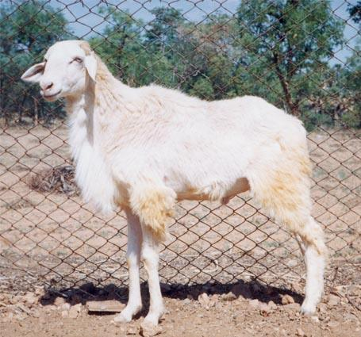

Sheep Breeds We Grow

🐑 Ramanadhapuram White
Origin: Ramanadhapuram, Sivagangai, Virudhunagar (Tamil Nadu)
Purpose: Meat Breed
Body Size: Medium
Color: Mostly White (some with black stripes)
Horns: Males with bent horns, females without horns
Weight: Adult Male Avg. 31 kg
Special Features: Hardy & Adaptable

🐏 Chindanuru Sheep
Origin: Andhra–Tamil Nadu border regions
Purpose: Meat Breed
Body Size: Medium to Large
Color: Mostly White, sometimes with patches
Horns: Males with curved horns, females usually hornless
Weight: Adult Male Avg. 35–40 kg
Special Features: Strong disease resistance & fast-growing